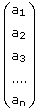
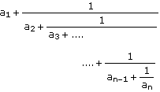

Continued Fractions |
To write the continued fraction expansion for a number or function, select it and either:
- or -
Then press [Enter].
Mathcad returns the answer as a column vector of the form

which represents the continued fraction

To return the answer as a fraction, rather than as a vector, type a comma after "confrac" and type quot;fraction" in the placeholder that appears.
To return the answer as a matrix with two columns, in which the second column contains the partial numerators of the continued fraction, type a comma after "confrac" and type "matrix" in the placeholder that appears.
By default, Mathcad returns enough terms of the continued fraction so that the result is accurate to within 10 significant digits. You can specify a different accuracy for the result by typing a comma after "confrac," followed by a positive integer for the number of significant digits.